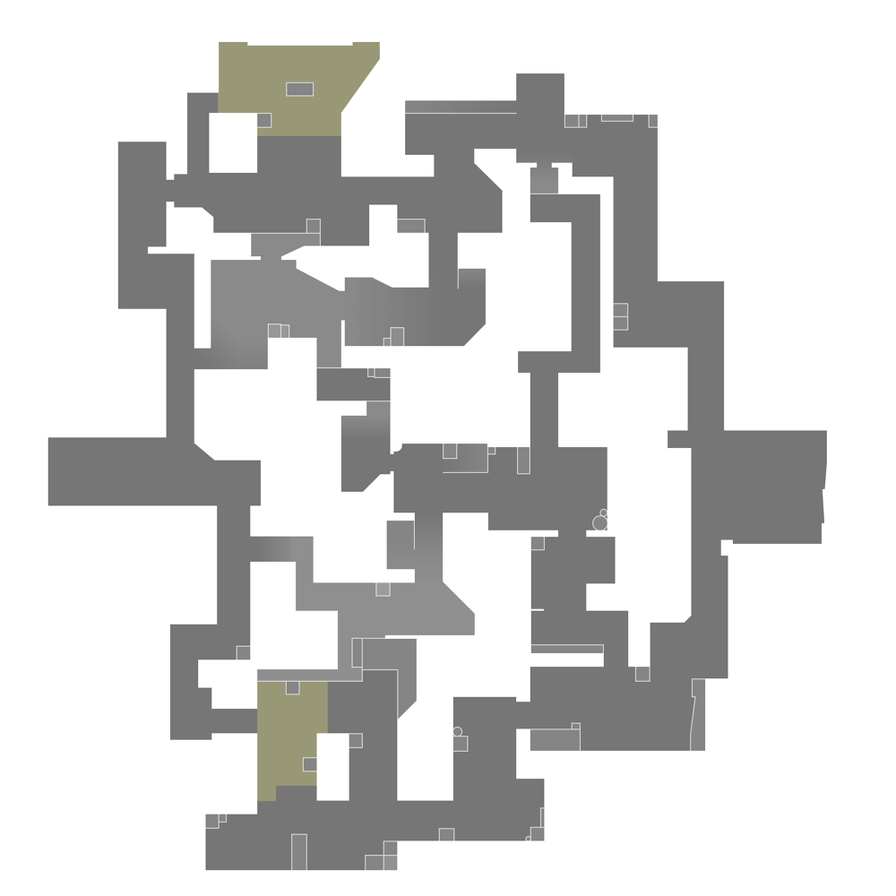

Split
🌙 Dark Mode
ğŸ Home
🗺️ All Maps
Full Map
Split is the first map to use ascenders. There are three sets on the map: Two that allow players to get up from Sewer to A Lobby, One that allows players to get up from B Hell to B Tower, Four that allow players to navigate through Vents.
Mini Map
